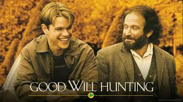
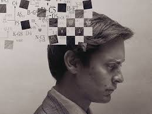
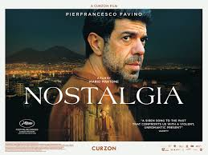
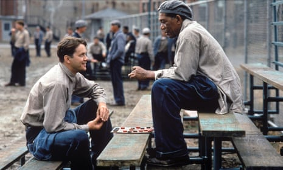

Top 10 Movies Like Good Will Hunting That Will Move and Inspire You

If Good Will Hunting left a lasting impression with its inspiring
story of genius, growth, and resilience, you're in for a treat.
We've curated a list of movies that capture the same heartfelt,
introspective spirit—films that explore human potential, complex
relationships, and the journey of self-discovery. Each of these
films will leave you moved, inspired, and maybe even a little
introspective, just like Good Will Hunting. Dive in and find your
next unforgettable watch!
Pawn Sacrifice

Step into the high-stakes world of chess with Pawn Sacrifice, a
gripping look at Bobby Fischer’s rise to fame and the
psychological toll of genius. This intense drama reveals the
fine line between brilliance and obsession, capturing one of the
greatest rivalries in chess history
Oppenheimer
In Oppenheimer, witness the dramatic life of the man who altered
history forever by developing the atomic bomb. This epic
biography dives into J. Robert Oppenheimer’s moral struggles,
his relentless pursuit of knowledge, and the high cost of
groundbreaking innovation.
The Man Who Knew Infinity
The Man Who Knew Infinity tells the true story of Srinivasa
Ramanujan, a self-taught Indian mathematician whose
extraordinary mind changed mathematics. Overcoming prejudice and
obstacles, Ramanujan’s journey to Cambridge and his friendship
with mentor G.H. Hardy are as inspiring as they are emotional.
The Imitation Game
The Imitation Game unveils the incredible achievements of Alan
Turing, the mathematician who broke the Nazi Enigma code. This
suspenseful and inspiring story highlights Turing's triumphs and
the hidden struggles he faced, ultimately changing the course of
World War II.
Nostalgia

Nostalgia is a poetic exploration of memories, love, and loss,
connecting different lives through the objects we hold dear.
This thoughtful film invites viewers to reflect on their own
cherished moments and the powerful memories that define us.
Schindler's List
Schindler’s List is an unforgettable story of courage and
compassion set against the horrors of the Holocaust. Follow
Oskar Schindler as he risks everything to save over a thousand
lives, offering a powerful testament to humanity’s strength in
the darkest of times.
The Terminal
In The Terminal, Tom Hanks delivers a heartwarming performance
as Viktor Navorski, a man stranded in an airport for months.
This uplifting film combines humor and heart as Viktor finds
friendship, purpose, and even love in the most unexpected of
places.
The Pianist
The Pianist is a hauntingly beautiful portrayal of survival
through the lens of music, following a gifted pianist’s
harrowing journey through the Holocaust. This Oscar-winning film
showcases the transformative power of art and the resilience of
the human spirit.
The Shawshank Redemption

A modern classic, The Shawshank Redemption is a moving tale of
hope and resilience within the walls of a brutal prison. With
unforgettable characters and a story of redemption, this film
remains a powerful reminder of friendship and the unbreakable
human will
.jpg)
.jpg)